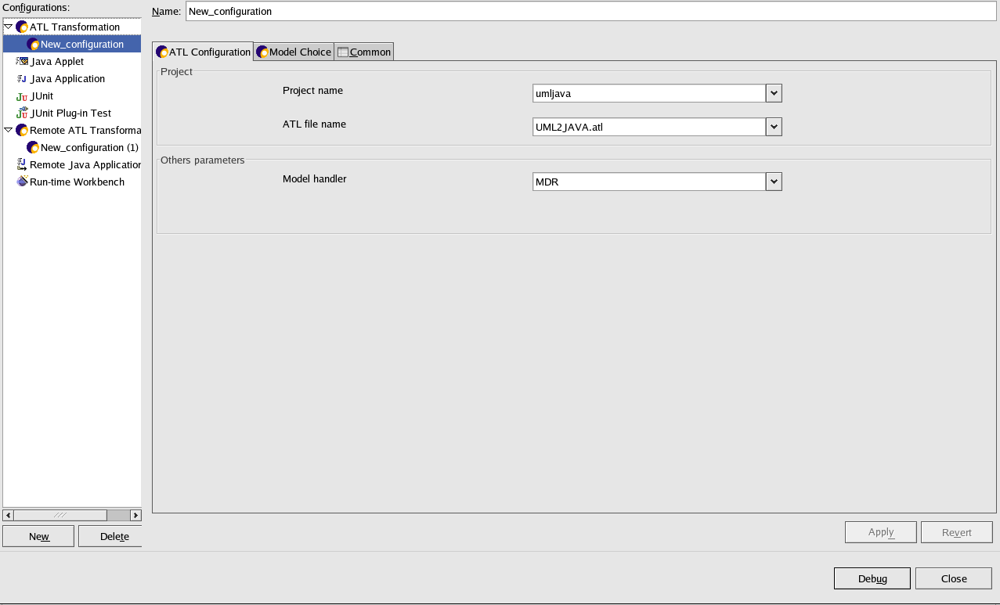
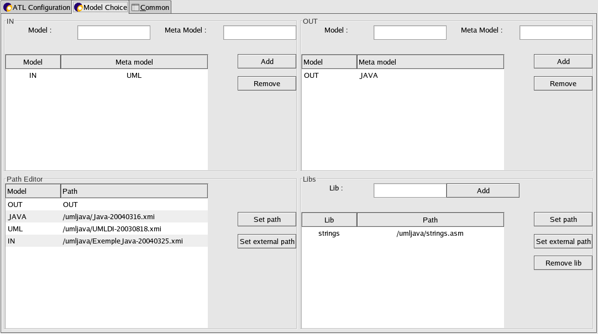

This time, the Launch Configurations dialog opens. A launch
configuration allows you to configure how a program is launched,
including its arguments, and other options. Select ATL Transformation
and click on New in order to create an ATL launch configuration.

There are two tabs allowing to configure how to launch your transformation : ATL Configuration and Model Choice. The last tab "Common" is not specific at ATL.
Select the ATL Configuration tab. You should give the name of the project where your transformation is located and the name of your transformation. Then, you should choose a model handler.
Select the Model Choice Tab, you should record the input models and meta-models and the output models and meta-models used in the transformation. Be careful, the name of your model in this tab should be the same that yours models in the ATL transformation.

For example : create OUT : JAVA from IN : UML; in your transformation implies in this tab : the couple IN (model) and UML (metamodel) in the IN part and the couple OUT (model) and JAVA (metamodel) in the OUT part like in the example screen.
Then you should set the path of all the models added, excepted for the
metamodel which are in the repository (for example MOF metamodel), in
this case the metamodel will not appear in the path editor.
There is another special case, for the output model, when you click on a button to set the path,
you just have to give the name of the output file (without the
extension) as in example screen.
The last part of the tab allows to add the libs used in the ATL transformation.
For example : if you used the lib strings, you should add this lib.
For models, metamodels and libs added, you have to set the set for each.
There is two possibities :
| Button "Set the path" | if the model is in the workspace |
| Button "Set external path" | if the model is not in the workspace |
If all the parameters are given (project, transformation, model handler, input and output model) , you can apply the configuration, else a message error at the top of the dialog display what is wrong in your configuration (for example, the path of your model is empty).
Now, you're ready to Run/Debug your transformation.
Running your transformation
Debugging your transformation